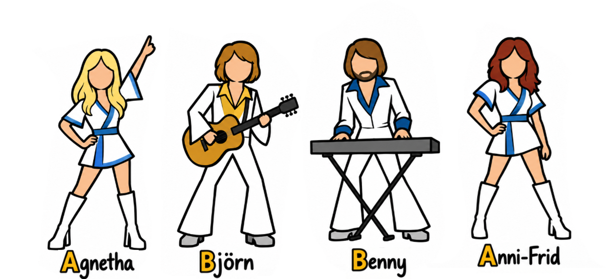

Where does 0.00418° per second come from?
Earth moves around the Sun as well as spinning. In one day it moves about
around its orbit.
This makes one rotation relative to the stars about 4 minutes shorter than a 24-hour solar day:
A sidereal day is approximately
giving

Smartphone gyroscope axes and the horizontal and vertical components of the Earth's rotation.
Is your phone gyroscope good enough?
The Earth-rotation signal is extremely small. A useful phone gyroscope must remain stable while each measurement is averaged for about 10–15 seconds.
Standard deviation
asks:
“How noisy are the individual readings?”
Allan deviation
asks:
“How stable is the average if I measure for this long?”
Averaging for longer usually helps.
We want the gyro average to be stable here.
Averaging longer is no longer necessarily better.
A simple sensor-quality check
For this experiment the Allan deviation at 15 seconds can be compared with the expected Earth-rotation signal:
Sensor instability is larger than the Earth signal.
The measurement is marginal.
The gyroscope is a promising candidate.
This ratio is a practical screening measure, rather than a formal statistical confidence test.
Earth Rotation Challenge
A guided Earth-rotation measurement using the Android gyroscope.
Place the phone flat with the selected gyroscope axis pointing north and follow the on-screen reversal sequence.
The main Earth-rotation result is available after approximately 90 seconds.
Open Android ExperimentUses the Android uncalibrated gyroscope stream.
Earth Rotation Challenge
iPhone version of the same guided ABBA reversal experiment.
Follow the 180° reversal sequence and compare the measured signal with the expected Earth rotation.
Open iPhone ExperimentUses the gyroscope stream currently available to phyphox on iOS.
Murata SCH16T + ESP32
A high-performance MEMS gyroscope used as a reference demonstration of the same Earth-rotation measurement.
The ESP32 sends the Murata gyroscope data directly to phyphox over Bluetooth.
 Download Arduino Code
Download Arduino Code
Hardware: Murata SCH16T-K01-PCB + ESP32.
The ABBA reversal method
Measurements are made in one orientation, after a 180° reversal, and then again after returning to the original orientation.

Why ABBA?
A 180° reversal changes the sign of the Earth-rotation signal, while the constant gyroscope bias does not change.
The ABBA sequence is also symmetric in time:
The average measurement time is the same for A and B, suppressing approximately linear gyroscope drift.